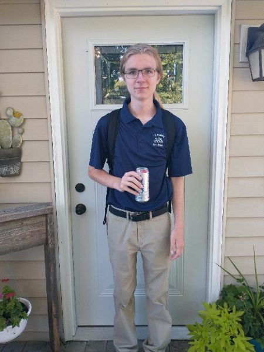

My name is Cory Lee Mavis, I was born on November 7th, 2005 and am 16 y.o. I have a younger brother named Gavin.
My two clossts friend are Andy Mosier and Ethan Winger we hang out occassionally and play some videogames together when we can.
Oxygen Not Included, Factorio, Screeps, War Thunder, and Kerbal Space Program.
I combine two of my hobbies, programming and video games for two of the entries in that list, Kerbal Space Program, and Screeps.
Kerbal Space Program is a game about flying rocketships to other planets with little green men. Modders inside the community have created a tool that allows you to create scripts using a custom programming language that can control the rockets autonomously.
Screeps is an MMO game that you control little creeps with Javascript throughout rooms to harvest energy and expand and grow larger. The game runs on a tick system where the game runs, everyone's scripts make all the changes to memory and the world, does it and starts again. The game has on average 21,000 concurrent players and as such it can take upwards of 5 seconds per tick.
I play all of these games far too much which is what got me interested in programming in the first place alongside wanting to improve my skills for use inside our Robotics Team.
I live with my family at
09927
St. Rt. 249
Farmer, OH 43520